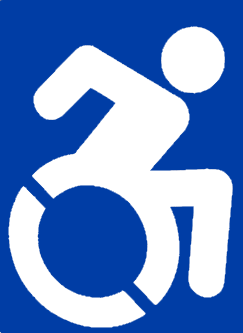

East Texas Neuro Support Group is open to any person with a neurological disabilities and their family/caregivers. There are no membership dues or requirements to join. Monthly, we join together in recreational activities, and semi-annually, we have a fundraiser.
If you would like to know more about us, you can email us at:
etnsgboard@gmail.com
If you would like to join us at one of our events,
click here.
If you would like to help us there are two phone numbers to call:
1. President: Todd Petershagen @ 936-615-3531
2. Vice President: Ange Lee @ 936-676-4054
If there are any suggestions or comments you have, give us an email or a call!
Our board members are Jerry Hendry, Randi Marrs, Robbie Kerr, Olivia Deaton, Todd Petershagen, and Ange Lee.
